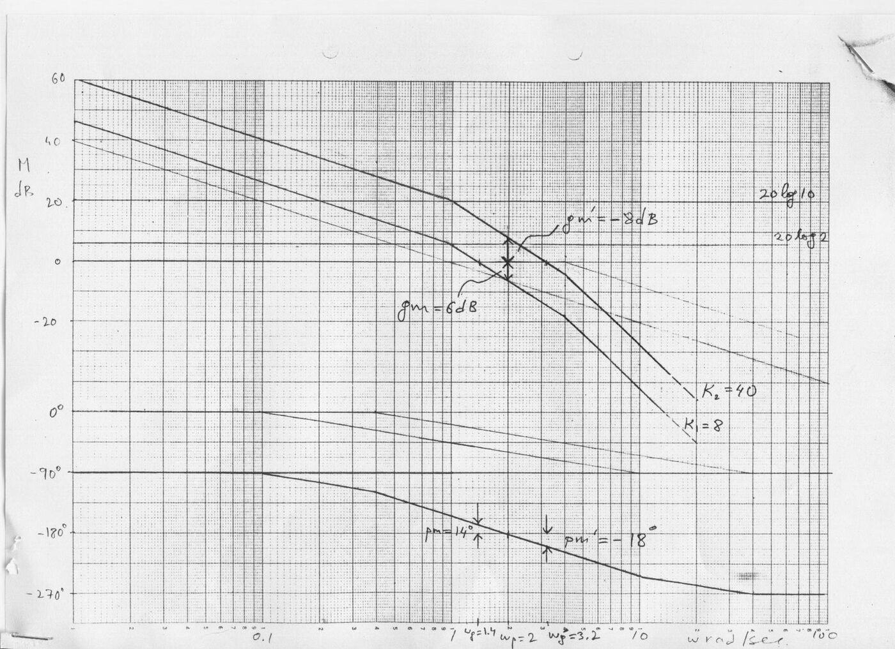
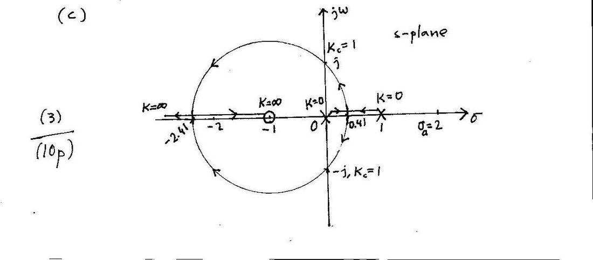

· EEM322
EEM322 Control Systems: Quizzes and Solutions (2005, 2008, 2012 – Uraz)
EEM322 – Denetim Sistemleri · 18.03.2005 · 16.10.2026
This post collects quiz questions and solution keys from different years of the EEM322 Control Systems course at Başkent University. The questions and handwritten solutions were prepared by the course instructor Prof. Dr. Alper Uraz. The 2004–2005 spring semester exams are in English, the 2007–2008 and 2012 exams are in Turkish; the solutions are in English. The numbers to the left of the solutions are step points; each quiz is worth 10 points.
The scanned solution keys (2004–2005 Quiz 3 and an undated "KS3" solution) can be downloaded as a ZIP at the end of the post. 2004–2005 Quiz 1, 2007–2008 Quiz 3 and 2012 Quiz 3 were transcribed from photographed pages; the photographs were not published, and student names and numbers were removed.
2004–2005 Quiz 1 (18.03.2005, 20 minutes): Field-controlled DC servo motor
Question: A field-controlled DC servo motor delivers a torque T to a load with moment of inertia J and rotational viscous friction B. The field circuit has resistance Rf and inductance Lf, voltage ef and current if; the armature circuit has resistance Ra and a constant armature current (ia = constant). Write all the mathematical relations (in the time domain); find the transfer function between the angular position of the load θ(s) and the applied input voltage Ef(s). Draw the detailed block diagram.
Solution:
| Time domain | s domain (with zero initial conditions) |
|---|---|
| Lf·dif/dt + Rf·if = ef | (Lf·s + Rf)·If(s) = Ef(s) |
| T = K₂·if | T(s) = K₂·If(s) |
| J·d²θ/dt² + B·dθ/dt = T | (J·s² + B·s)·θ(s) = K₂·If(s) |
Transfer function:
θ(s)/Ef(s) = K₂ / [s(Lf·s + Rf)(J·s + B)] = Km / [s(Tf·s + 1)(Tm·s + 1)]
where Km = K₂/(Rf·B), Tf = Lf/Rf (field time constant), Tm = J/B (mechanical time constant).
Block diagram: Ef(s) → [1/(Lf·s + Rf)] → If(s) → [K₂/(s(J·s + B))] → θ(s).
2004–2005 Quiz 3 (23.05.2005, 30 minutes): Bode plots for two gains
Question: In a unity-feedback system, G(s) = K / [s(s + 1)(s + 4)]. Using the straight-line approximation, draw the Bode plots for K₁ = 8 and K₂ = 40 (10 dB/cm on the magnitude plot, 45°/cm on the phase plot). Show the gain and phase crossover frequencies and the gain and phase margins on the diagram and read off their approximate values. Discuss the closed-loop stability for both values of K.
Solution:
- For K₁ = 8, time-constant form: G(s) = 2 / [s(1 + s)(1 + s/4)], G(jω) = 2 / [jω(1 + jω)(1 + jω/4)] = M∠φ. The corner frequencies are 1 and 4 rad/s.
- 20 log M = 20 log 2 − 20 log ω − 20 log √(1 + ω²) − 20 log √(1 + ω²/16)
- φ = −90° − tan⁻¹ω − tan⁻¹(0.25ω)
- From the diagrams (K₁ = 8): gain crossover frequency ωg = 1.4 rad/s, phase crossover frequency ωp = 2 rad/s; gain margin gm = 6 dB, phase margin pm = 14°.
- For K₂ = 40 the phase curve does not change (ωp = 2). The magnitude curve shifts up by 20 log 10 − 20 log 2 = 14 dB: the new ωg′ = 3.2 rad/s, gm′ = −8 dB, pm′ = −18°.
- The closed-loop system is stable for K₁ = 8 and unstable for K₂ = 40.

Note: The values were read from the asymptotic diagram. By exact calculation, |G| = 0.4 at ωp = 2 rad/s, so for K = 8 gm ≈ 8 dB, ωg ≈ 1.22 rad/s and pm ≈ 22°; for K = 40, gm ≈ −6 dB. The stability conclusion is the same (by Routh, the critical gain is K = 20).
Undated "KS3" solution key: Root locus with an open-loop unstable pole
The same scan was present as a copy in two separate folders ("control 2" and "denetim"). There is no question sheet; from the solution it is understood that the system is G(s) = K(s + 1) / [s(s − 1)].
- (a) Closed-loop characteristic equation: Δ(s) = s(s − 1) + K(s + 1) = s² + (K − 1)s + K = 0. Routh table: s²: 1, K; s¹: K − 1; s⁰: K ⇒ the closed loop is stable for K > 1. Critical gain Kc = 1; auxiliary equation s² + 1 = 0 ⇒ s₁,₂ = ±j.
- (b) The open-loop poles are 0 and 1 (n = 2), the zero is −1 (m = 1) ⇒ number of asymptotes n − m = 1. Asymptote centroid σa = (Σpi − Σzi)/(n − m) = (1 − (−1))/1 = 2, angle θk = (2k + 1)π/(n − m) = π.
- Breakaway points: K = −s(s − 1)/(s + 1) ⇒ dK/ds = −[(2s − 1)(s + 1) − (s² − s)]/(s + 1)² = 0 ⇒ s² + 2s − 1 = 0 ⇒ roots −2.41 and 0.41.
- (c) Root locus: the branches start at the poles at 0 and 1 (K = 0), leave the real axis at 0.41, cross the imaginary axis at ±j for Kc = 1, return to the real axis at −2.41 along a circle centered at −1; one goes to the zero at −1, the other to −∞ (K = ∞).

2007–2008 Quiz 3 (01.05.2008): Root locus of a fourth-order system
In the photograph of this paper, only the question and the beginning of the student's solution are legible.
Question (from the Turkish original): The open-loop transfer function (OLTF) of a unity-feedback control system is given as
G(s) = K / [s(s + 1)(s + 3)(s + 4)]
- (a) Using the closed-loop characteristic equation (CLCE), examine the closed-loop stability for all values of K; find the critical value of K and the critical points.
- (b) Give and use the formulas for the centroid and angles of the asymptotes. Calculate the possible breakaway points for sketching the root locus. One of the roots of (dK/ds), −2, is not a breakaway point.
- (c) Sketch the root locus for 0 ≤ K < ∞, indicating all details.
The student's solution begins by expanding the characteristic equation: Δ(s) = K + s(s + 1)(s + 3)(s + 4) = K + (s³ + 3s² + s² + 3s)(s + 4) = K + s⁴ + 8s³ + 19s² + 12s = 0. At the top corner of the paper, the asymptote formulas are visible (σ = (Σpj − Σzi)/(n − m), θk = (2k + 1)π/(n − m)).
Note: The photograph does not show the rest of the solution; for checking, the computed results are: from the Routh table, the closed loop is stable for 0 < K < 26.25, the critical gain is Kc = 26.25 and the critical points are s = ±j1.22; the asymptote centroid is σa = (0 − 1 − 3 − 4)/4 = −2, with angles ±45° and ±135°; the roots of dK/ds = 0 are −2, −0.42 and −3.58, and the breakaway points are −0.42 and −3.58 (−2 is not a breakaway point because it is not on the root locus on the real axis).
2012 Quiz 3: System with a zero and an unstable pole
Question (from the Turkish original): The open-loop transfer function (OLTF) of a unity-feedback control system is given as G(s) = K(s + 2) / [(s + 1)(s − 1)]. (a) Using the CLCE, examine the closed-loop stability for all values of K; find the critical value of K and the critical points. (b) Give and use the formulas for the centroid and angles of the asymptotes; calculate the possible breakaway points. (c) Sketch the root locus for 0 ≤ K < ∞, indicating all details.
Solution key:
- (a) Δ(s) = s² − 1 + K(s + 2) = s² + Ks + 2K − 1 = 0. Routh table: s²: 1, 2K − 1; s¹: K; s⁰: 2K − 1 ⇒ the closed loop is stable for K > 1/2. Kc = 0.5 ⇒ s² + 0.5s = 0 ⇒ critical point s₁ = 0.
- (b) The open-loop poles are −1 and 1 (n = 2), the zero is −2 (m = 1) ⇒ one asymptote. Centroid σa = (1 − 1 − (−2))/1 = 2, angle θk = (2k + 1)π/(n − m) = π.
- Breakaway points: K = (1 − s²)/(s + 2) ⇒ dK/ds = [−2s(s + 2) − (1 − s²)]/(s + 2)² = 0 ⇒ s² + 4s + 1 = 0 ⇒ roots −0.27 and −3.73.
- (c) The root locus draws a circle around the zero at −2, leaving the real axis at −0.27 and returning to it at −3.73.
On one student paper from the same exam, Δ(s) = (s + 1)(s − 1) + K(s + 2) = s² + Ks + 2K − 1 was also written, and Kc = 1/2 was found from the Routh table; the asymptote angles were calculated with θk = (2k + 1)π/(n − m) for k = 0 and k = 1 as 180° and 540° (i.e., again 180°).